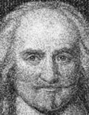

İngiliz filozof Thomas Hobbes (1588-1679), geometriden tarihe kadar çok farklı alanlarda çalışmalar yürütmüştür. Günümüzde daha ziyade 1651 yılında yazdığı Leviathan adlı eseri ile tanınmaktadır. Toplumsal sözleşme kavramını açıklayan kitabın, Batı siyaset felsefesi üzerinde büyük etkisi olmuştur.

Hobbes, kitabını İngiltere İç Savaşı’nın hemen ardından yazar. Temel iddiası, anarşinin önlenmesi için bireylerin gönüllü olarak güçlü bir hükümeti tercih edecekleri yönündedir. Bu toplumsal sözleşmeyi koruyacak güçlü yöneticiler olmaksızın toplumların kaosa sürükleneceklerini ileri sürer. Bu kaosun bir diğer adı da “doğal durum”dur (state of nature). Konuyla ilgili ünlü pasajında bu koşullar altındaki bir yaşamı “kasvetli, yoksul, çirkin, hayvani ve kısa” olarak tanımlar.
Hobbes’un güçlü iktidara verdiği destek ve insan doğasına ilişkin genel gözlemleri büyük ölçüde 17.’yy İngilteresi’nde tanık olduğu olaylardan ileri gelmektedir. Gözden düşmüş eski bir bakanın çocuğu olan Hobbes, 1608 yılında Oxford’dan mezun oldu. Hayatının büyük bölümünü, aralarında geleceğin kralı 2. Charles’ın da (1630-1685) bulunduğu genç asillere öğretmenlik yaparak geçirdi. Ateşli bir kral taraftarı olarak iç savaş başlayınca ülkeyi terk edip Paris’e gitmek zorunda kaldı. Zira monarşi kısa süreliğine de olsa devrilmişti.
Leviathan, Paris’te yayınlanınca Fransızlar’ı kızdırdı. Hobbes İngiltere’ye geri dönmek zorunda kaldı (politika dışında kalacağına söz vererek kralcı düşüncelerinden dolayı ceza almaktan kurtuldu). Hayatının kalan kısmını İngiltere’de geçirdi. 1660 yılında monarşinin yükselişinin ardından yeniden siyasi güce kavuşacaktı.
Londra’daki büyük yangının ardından 1666 yılında görüşlerine karşı olan muhalefet yeniden yükselişe geçti. Pek çok kişi yangını Tanrı’nın gazabı olarak görmekteydi. Bu öfkenin kaynağı ise İngiliz ateist yazarlardı. Hobbes da devletin varlığının kutsal olmadığını, aksine insanlar tarafından türetilmiş bir kavram olduğunu iddia edenler arasındaydı. Bu düşünceleri nedeniyle sapkınlıkla suçlandı.
Hobbes cezalandırılmaktan kurtulmayı başarmış ve eserlerini yayınlamaya devam etmiştir. Çalışmalarının arasında Yunan klasiklerinden yaptığı çeviriler de bulunmaktadır. Doksan bir yaşında ölene kadar çalışmaya devam etmiştir. Başta John Locke (1632-1704) ve Jean Jacques Rousseau (1712-1778) olmak üzere çeşitli filozoflar üzerinde etkili olmuştur.
Ek Bilgiler
1- Leviathan, adını İncil’deki efsanevi bir deniz canavarından alır. Hobbes, devleti betimlemek için canavarı bir metafor olarak kullanmıştır. Onun bakış açısına göre devlet çok sayıda bireyden oluşan güçlü bir devdir.
2- Hobbes’un geometri çalışmaları felsefe kariyerine göre daha az başarılıdır. 1660 yılında eski bir matematik problemi olan “Delian problemi”ni çözdüğünü ilan eder. Ancak bulduğu çözüm kısa sürede çürütülür.
3- Ölmeden önceki son sözlerinin “karanlıkta büyük bir sıçrama” olduğu söylenir.